ECG Blog #458 — Blốc tim hoàn toàn?
Tôi được gửi bản ghi này — và được cho biết rằng các nhân viên y tế nghĩ nhịp này là blốc AV độ 3 (tức là hoàn toàn).
- BẠN có đồng ý không?

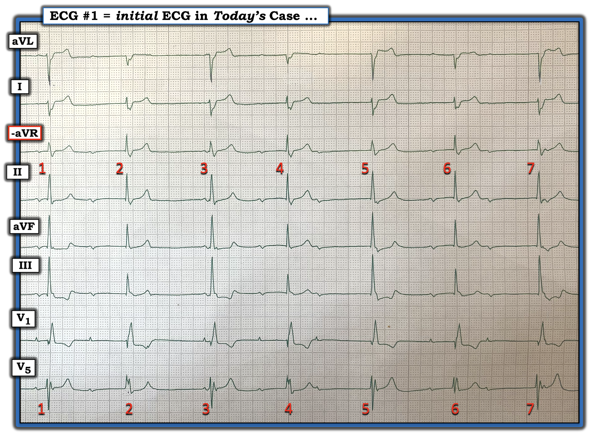
===========================
LƯU Ý: Bản ghi trong Hình-1 là một dải nhịp 8 chuyển đạo (và không phải một điện tâm đồ 12 chuyển đạo đầy đủ). Điều này có ưu điểm là cung cấp 8 chuyển đạo với các góc nhìn ghi đồng thời của cùng 7 nhát mà chúng ta thấy trong bản ghi này.
- Cũng lưu ý rằng chuyển đạo thứ 3 từ trên xuống là chuyển đạo -aVR (và không phải +aVR) — với góc nhìn âm này, chuyển đạo aVR cho một góc nhìn điện học ở +30 độ (tương ứng với góc nhìn điện học nằm giữa chuyển đạo I và II ).
- Lý do chúng ta thấy chuyển đạo -aVR trong bản ghi hôm nay là vì điện tâm đồ này do BS. Magnus Nossen cung cấp — người đến từ Na Uy, nơi định dạng Cabrera là chuẩn khi ghi điện tâm đồ (Vui lòng xem ECG Blog #365 để biết các ưu điểm tiềm năng của định dạng Cabrera).
===========================
SUY NGHĨ CỦA TÔI về nhịp trong Hình-1:
Về câu hỏi lâm sàng đặt ra trong ca hôm nay — tôi ngay lập tức nhận ra rằng điện tâm đồ #1 khó có khả năng là blốc AV hoàn toàn — đơn giản vì đáp ứng thất không đều.
- ĐIỂM THEN CHỐT (PEARL) #1: Dù có ngoại lệ, phần lớn các trường hợp khi nhịp là blốc AV hoàn toàn — nhịp thoát sẽ đều (hoặc ít nhất là khá đều). Chân lý này nhìn chung vẫn đúng bất kể nhịp thoát xuất phát từ nút AV — từ bó His — hay từ tâm thất.
- ĐIỂM THEN CHỐT (PEARL) #2: Điều bổ sung mà tôi yêu thích cho PEARL #1 — là manh mối tốt nhất trong một bản ghi có blốc AV cho thấy ít nhất một số sóng P đúng lúc có được dẫn truyền — là khi một hoặc nhiều phức bộ QRS vốn đều lại xuất hiện sớm hơn dự kiến (điều này gợi ý mạnh rằng lý do QRS này xuất hiện sớm hơn dự kiến — là vì QRS này có được dẫn truyền xuống tâm thất). Do đó, thay vì blốc AV "hoàn toàn" — điều này cho chúng ta biết gần như chắc chắn đang có một dạng blốc AV độ 2 nào đó.
“Câu trả lời nhanh” cho nhịp hôm nay:
Ngay cả khi không có compa đo, khi nhìn vào nhịp trong Hình-1 — chỉ cần không quá vài giây để nhận ra rằng có những sóng P dường như nằm quá xa các phức bộ QRS lân cận để có thể dẫn truyền — NHƯNG — ít nhất nhát #4 xuất hiện sớm hơn dự kiến một chút. Điều này gợi ý rằng nhát #4 có lẽ được dẫn truyền (dù với khoảng PR dài) — do đó nhịp này khó có khả năng là blốc AV hoàn toàn.
- XIN NHẤN MẠNH: Bất kể nhịp trong Hình-1 là blốc AV độ 2 hay độ 3 — tần số thất chung là chậm (trong khoảng 40–49/phút) — vì vậy NẾU bệnh nhân này có triệu chứng và không tìm thấy nguyên nhân “có thể khắc phục” nào của nhịp chậm — thì vẫn có thể cần tạo nhịp.
===========================
Câu trả lời "dài hơn": = Vậy thì chuyện gì đang xảy ra?
Như thường lệ — tôi ưu tiên đánh giá nhịp tim một cách hệ thống theo Cách tiếp cận Ps, Qs, 3R (Xem ECG Blog #185 để ôn lại).
Quay lại Hình-1 — tôi tìm các Ps, Qs và 3Rs:
- Sóng P rõ ràng có mặt trong nhịp hôm nay. Dù biên độ nhỏ — các sóng P này thấy khá rõ ở chuyển đạo II.
- Trong Hình-2 — tôi đã đánh dấu bằng mũi tên ĐỎ những sóng P xoang mà chúng ta chắc chắn nhìn thấy.
ĐIỂM THEN CHỐT (PEARL) #3:
Một trong những đặc điểm MẤU CHỐT của blốc AV độ 2 hoặc độ 3 — là nhịp nhĩ thường sẽ đều (hoặc ít nhất là gần như đều — nếu có loạn nhịp xoang nền).
- Nhận biết đặc điểm này giúp loại trừ các hình ảnh có thể giả blốc AV, chẳng hạn như PAC bị blốc (không dẫn truyền) (khi đó nhịp nhĩ sẽ “lệch” rõ ràng — rõ hơn nhiều so với mức không đều hạn chế của loạn nhịp xoang theo pha thất (ventriculophasic)).
- GỢI Ý: Dùng compa đo giúp thuận lợi (và nhanh hơn) trong việc tìm xem có nhịp nhĩ đều nền hay không.
NHÌN lại Hình-2. Xét các sóng P xoang có mũi tên ĐỎ trong bản ghi này mà chúng ta biết chắc chắn có mặt:
- Chẳng phải các biến dạng nhỏ thêm vào dưới 2 mũi tên HỒNG (xuất hiện ngay sau phức bộ QRS của nhát #5 và #7) tương ứng với vị trí mà bạn sẽ mong thấy sóng P nếu có một nhịp xoang đều nền hay sao?
- Chẳng phải sóng T của nhát #2 hơi nhọn hơn tất cả các sóng T khác trong dải nhịp chuyển đạo II dài (dưới mũi tên TRẮNG)?
- Vì vậy — Chẳng phải chúng ta vừa xác lập rằng gần như chắc chắn có một nhịp xoang đều nền trong Hình-2 hay sao?

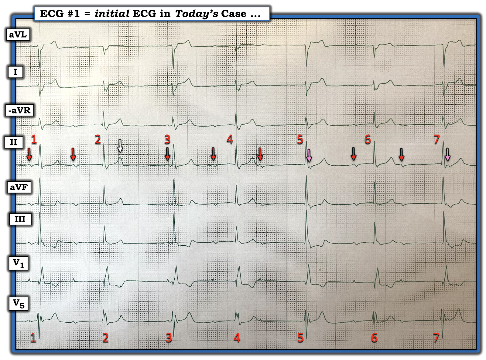
===========================
Tiếp tục với Ps, Qs, 3Rs ... ( = Xem xét QRS):
- ĐIỂM THEN CHỐT (PEARL) #4: "Nhiều chuyển đạo thì tốt hơn một!"
Dù tôi thường thích bắt đầu với chuyển đạo II khi phân tích nhịp — phức bộ QRS ở chuyển đạo này trông không khác nhau nhiều giữa nhát này với nhát kế tiếp.
- Thú nhận: Thực tế ban đầu tôi đã bị đánh lừa khi diễn giải nhịp hôm nay — vì tôi đã quên áp dụng PEARL #4 ...
- Sau đó tôi nhìn kỹ hơn vào chuyển đạo V5.
Trong Hình-3 — tôi làm nổi bật MANH MỐI hữu ích nhất để giải rối loạn nhịp phức tạp hôm nay — đó là hình dạng QRS thay đổi của 7 nhát trong Hình-3:
- Nhìn chung — Phức bộ QRS rõ ràng là rộng (ít nhất 3 ô nhỏ, tức thời gian ≥0.12 giây).
- Lý do hợp lý nhất cho hình dạng QRS thay đổi, thấy rõ nhất ở chuyển đạo V5 — là một số nhát được dẫn truyền (dù kèm một dạng rối loạn dẫn truyền nào đó) — trong khi các nhát khác xuất phát từ một ổ "thoát" thất.

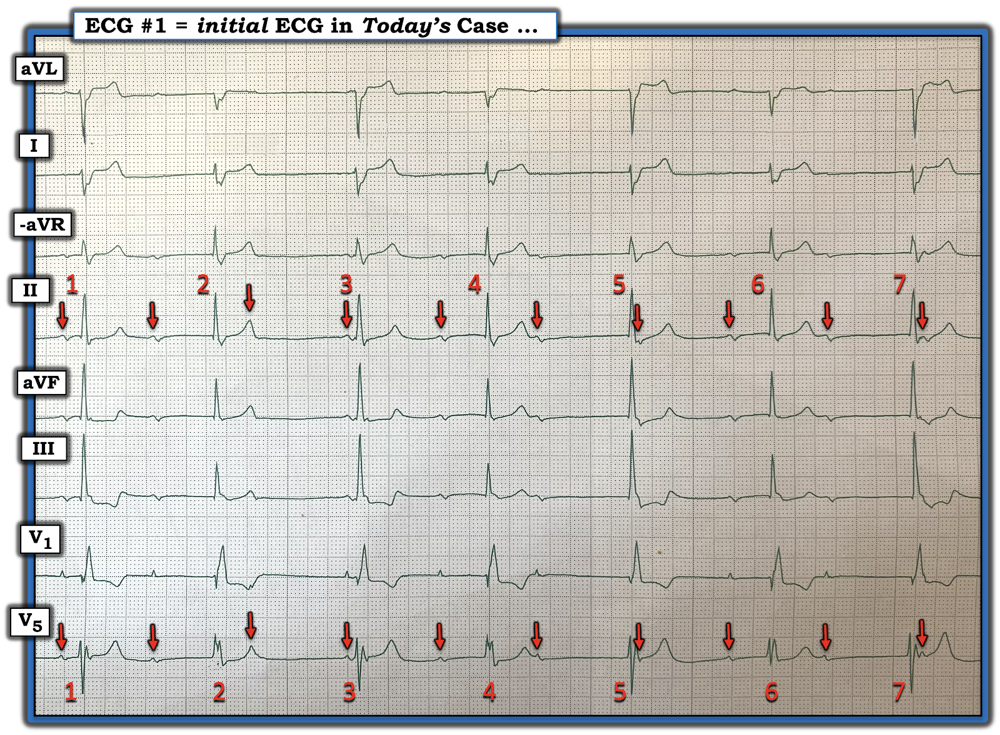
===========================
Các BƯỚC tiếp theo …
Từ đây trở đi — tôi tập trung vào dải nhịp chuyển đạo V5 dài mà tôi đã đánh dấu trong Hình-4:
- Mũi tên ĐỎ cho thấy nhịp xoang nền khá đều (dù có một chút loạn nhịp xoang theo pha thất) — mà chúng ta đã xác định ở trên trong Hình-2.
- 3 hình dạng QRS khác nhau được thấy trong Hình-4: i) Các nhát #1,3,5,7 trông giống nhau (với phức bộ RSr’ giãn rộng); — ii) Các nhát #2 và 4 trông giống nhau (mỗi nhát có phức bộ RR’ phân mảnh); — và, iii) Nhát #6 giống nhát #2 và 4 — nhưng thiếu sóng S tận rộng, rõ nét mà 2 nhát kia có.
- Phát hiện MẤU CHỐT cuối cùng đến từ việc áp dụng PEARL #1 và 2 — theo đó chúng ta cần đo cẩn thận tất cả các khoảng R-R (như tôi đã làm, tính bằng ms, trong Hình-4).
CÂU HỎI:
- Những phức bộ QRS nào trong Hình-4 nhiều khả năng là nhát thoát?

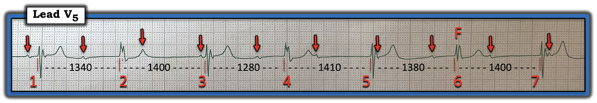
Những nhát nào trong Hình-4 là nhịp thoát thất?
Nhát thoát thất dễ nhận biết nhất nhờ có: i) Hình dạng QRS khác so với các nhát dẫn truyền từ xoang; — ii) Khoảng R-R đi trước dài hơn; — và, iii) Không có sóng P đi trước với khoảng PR có khả năng dẫn truyền.
- 3 phức bộ QRS trong Hình-4 có khoảng R-R đi trước dài nhất là nhát #3, 5 và 7 (với khoảng R-R đi trước lần lượt là 1400 ms — 1410 ms — và 1400 ms).
- Nhát #3 đi sau một sóng P có khoảng PR trông quá ngắn để dẫn truyền. Nhát #5 và 7 đều đi sau sóng P có khoảng PR trông quá dài để dẫn truyền.
- Hình dạng QRS của cả 3 nhát này đều giống nhau (phức bộ RSr’) — gợi ý rằng nhát #3,5,7 đều là nhát thoát thất với khoảng R-R đi trước ~7 ô lớn (tương ứng với tần số thoát thất ~43/phút).
- Nhát #1 cũng nhiều khả năng là một nhát thoát thất — vì nó có cùng hình dạng RSr’ như các nhát #3,5,7.
- ĐIỂM NÂNG CAO: Mặc dù nhát #1 trong Hình-4 đi sau một sóng P với khoảng PR có vẻ hợp lý (khoảng ~0.18 giây) — khoảng PR này có lẽ vẫn quá ngắn để dẫn truyền do mức độ blốc AV nền trong bản ghi hôm nay.
Những nhát nào trong Hình-4 có lẽ được dẫn truyền?
Áp dụng PEARL #2 — nhát #2 và 4 đều xuất hiện sớm hơn dự kiến đáng kể (tức là với khoảng R-R đi trước lần lượt là 1340 ms và 1280 ms). Điều này gợi ý rằng cả hai nhát này đều được dẫn truyền.
- ĐIỂM THEN CHỐT (PEARL) #5: Biết rằng nhát #2 và 4 được dẫn truyền cho phép chúng ta suy ra thêm 2 điểm quan trọng: i) Hình dạng QRS của các nhát được dẫn truyền trông giống phức bộ RSr’ của nhát #2 và 4; — và, ii) Mặc dù khoảng PR kéo dài rõ rệt — các sóng P đi trước nhát #2 và 4 vẫn đang được dẫn truyền, xét theo việc các nhát này xuất hiện sớm như thế nào — điều đó hàm ý có một mức độ blốc AV đáng kể.
Như vậy chỉ còn nhát #6 là phức bộ QRS duy nhất chưa được giải thích:
- Lưu ý rằng hình dạng QRS của nhát #6 là trung gian giữa hình dạng QRS của các nhát thoát #1,3,5,7 — và các nhát dẫn truyền từ xoang #2 và 4. Điều này gợi ý rằng nhát #6 là một nhát hỗn hợp (Xem ECG Blog #128 — để biết thêm về nhát hỗn hợp).
- Bằng chứng ủng hộ rằng nhát #6 thực sự là một nhát hỗn hợp — đến từ việc khoảng R-R đi trước của nó tương đối dài hơn (1380 ms) — và — có một sóng P đi trước với khoảng PR dường như có khả năng dẫn truyền.
Tổng Hợp Lại “Câu trả lời dài hơn” :
Theo Cách tiếp cận Ps, Qs, 3R — nhịp trong Hình-4 chậm (tần số trung bình ~40/phút) — hơi không đều — với loạn nhịp xoang nền và nhiều hình dạng QRS giãn rộng khác nhau — trong đó một số sóng P được dẫn truyền, nhưng số khác thì không.
- Do đó, nhịp trong Hình-4 — là một dạng nào đó của blốc AV độ 2, kèm nhịp chậm đáng kể.
===========================
Còn các Chuyển Đạo khác thì sao?
Như đã nói ở trên — bản ghi hôm nay không phải là điện tâm đồ 12 chuyển đạo. Dù vậy, bản ghi nhịp này cho thấy cả 6 chuyển đạo chi và 2 chuyển đạo ngực — do đó có đủ chuyển đạo để cung cấp thông tin về tình huống lâm sàng.
- Điều quan trọng là phải loại trừ một biến cố cấp tính.
Trong Hình-5 — tôi tập trung vào hình dạng QRST của 2 nhát được dẫn truyền trong bản ghi này ( = nhát #2 và #4) — vì đánh giá thay đổi cấp tính ở các nhát thoát hoặc nhát hỗn hợp khó hơn nhiều.
- Phức bộ rsR' ở chuyển đạo V1 — kèm sóng S tận rộng ở chuyển đạo I, và ở mức độ ít hơn ở chuyển đạo V5 — phù hợp với RBBB (blốc nhánh phải — Right Bundle Branch Block) nền.
- Phức bộ QRS chủ yếu âm ở chuyển đạo I — kèm hình ảnh qR ở các chuyển đạo dưới II,III,aVF — phù hợp với LPHB (blốc phân nhánh trái sau — Left Posterior HemiBlock) — do đó có blốc hai phân nhánh (RBBB/LPHB).
- Các khía thêm ở nhiều chuyển đạo (tức là đặc biệt ở chuyển đạo I,II,V5) cho thấy phân mảnh, thường là dấu hiệu của sẹo cũ kèm bệnh tim nền đáng kể.
- Dù vậy — đánh giá thay đổi ST-T ở 8 chuyển đạo trình bày trong Hình-5 không gợi ý thay đổi cấp tính.

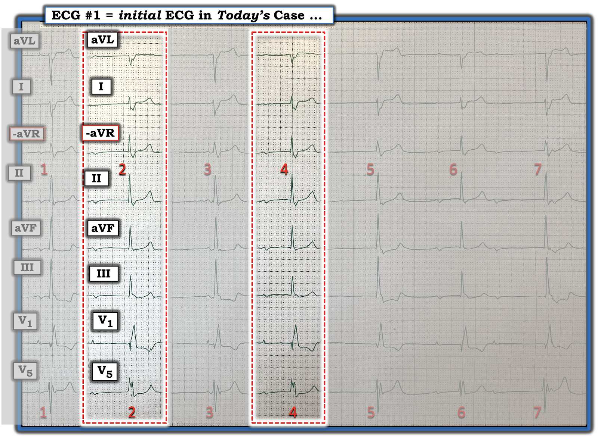
===========================
GIẢN ĐỒ BẬC THANG (LADDERGRAM):
Để rõ ràng, qua 5 Hình tiếp theo — tôi sẽ dựng lại cơ chế mà tôi tin là hợp lý nhất cho rối loạn nhịp phức tạp hôm nay:

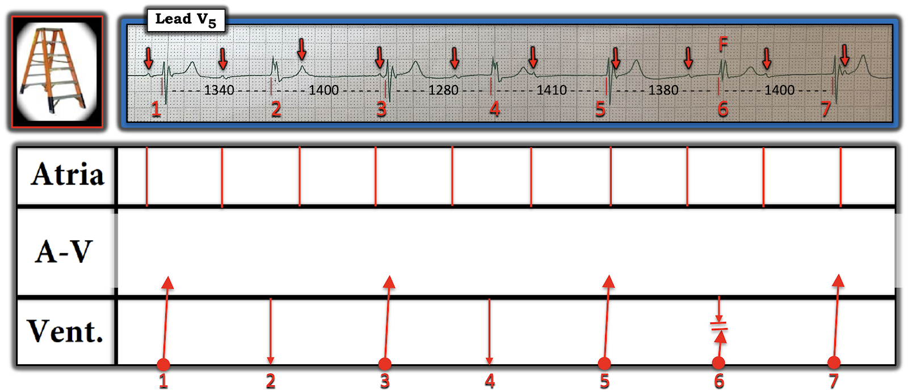
= = = = = = = = = = = = =
Giờ thử thách mới bắt đầu — khi chúng ta cố gắng "giải" giản đồ bậc thang bằng cách tìm ra những sóng P nào ở Tầng Nhĩ đang được dẫn truyền xuống tâm thất.

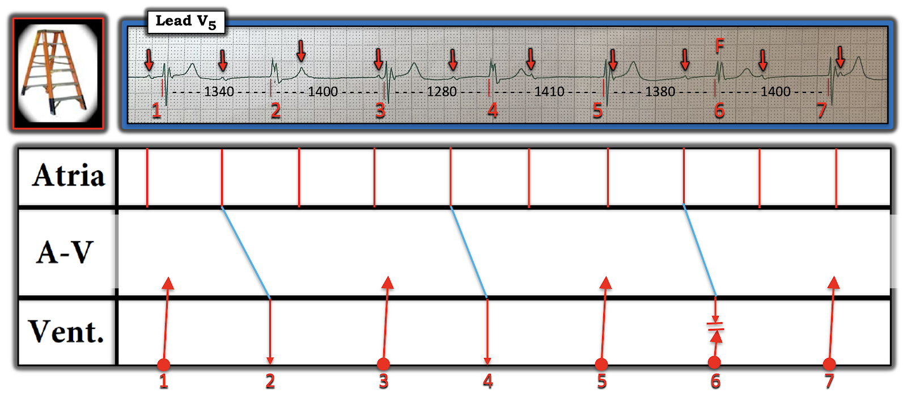

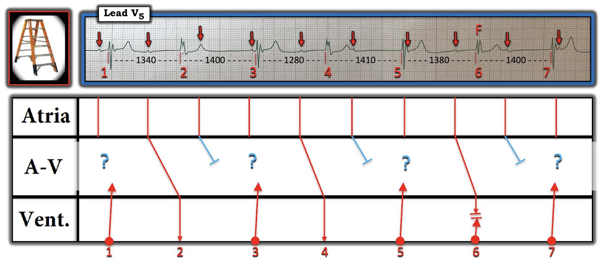

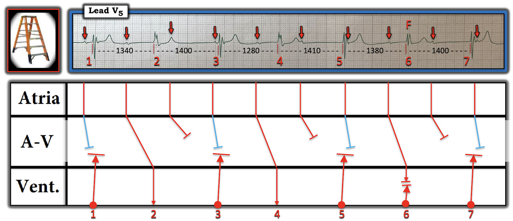

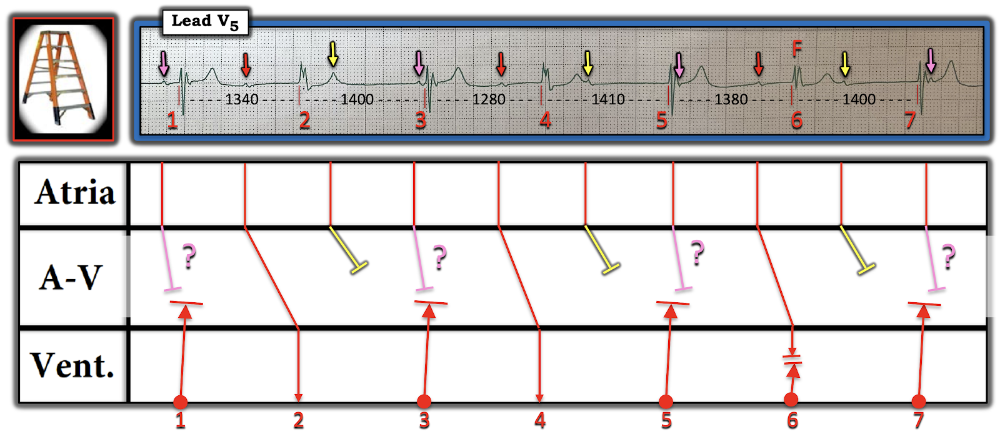
= = = = = = = = = = = = =
ĐIỀU CỐT LÕI: Bệnh nhân có blốc hai phân nhánh (RBBB/LPHB) này — có một dạng blốc AV độ 2 nào đó, trong đó có nhịp chậm rõ rệt (tần số hiệu dụng 40–49/phút) — và những sóng P nào có dẫn truyền thì dẫn truyền với blốc AV độ 1 rõ rệt. Trừ khi tìm được nguyên nhân "có thể khắc phục" nào đó của rối loạn dẫn truyền này — bệnh nhân có lẽ sẽ cần máy tạo nhịp.
==================================
Lời cảm ơn: Xin cảm ơn Magnus Nossen (đến từ Fredrikstad, Na Uy) đã chia sẻ ca bệnh và các bản ghi này.
==================================

==============================
Các bài ECG Blog liên quan đến ca hôm nay:
- ECG Blog #185 — Hệ thống Ps, Qs, 3R của tôi để đọc nhịp.
- ECG Blog #188 — Ôn lại cách đọc và vẽ giản đồ bậc thang (kèm LINK tới hơn 100 ca có giản đồ bậc thang — nhiều ca có minh họa tuần tự từng bước).
- ECG Blog #205 — Ôn lại Cách tiếp cận hệ thống của tôi để đọc điện tâm đồ 12 chuyển đạo.
- ECG Blog #164 và ECG Blog #251 —Ôn lại blốc AV độ 2 Mobitz I, kèm bàn luận chi tiết về "Dấu chân" của Wenckebach.
- ECG Blog #236 — Ôn lại trong Video Pearl #52 dài 15 phút của chúng tôi cách nhận biết các blốc AV độ 2 (bao gồm blốc AV "mức độ cao").
- ECG Blog #186 — Ôn lại khi nào nên nghi ngờ blốc độ 2, Mobitz loại I.
- ECG Blog #404 — Dẫn dắt bạn qua một cách tiếp cận từng bước một cho ca blốc AV này (kèm link tới VIDEO của ca này, và tới Blog #344 để biết thêm chi tiết).
- ECG Blog #352 — nhấn mạnh rằng blốc AV độ 1 với khoảng PR rất dài có thể gây hậu quả huyết động.

==================================
PHẦN BỔ SUNG (ngày 1/12/2024) — Tương quan nghịch RP/PR (RP/PR Reciprocity) ...
Hôm nay tôi nhận được bình luận về bản ghi này từ David Richley, người rất nổi tiếng với hầu hết những người đam mê điện tâm đồ thường lui tới bất kỳ diễn đàn điện tâm đồ nào trong rất nhiều diễn đàn trên internet. Dave luôn đưa ra những bình luận sắc sảo nhất về diễn giải các rối loạn nhịp phức tạp.
- LƯU Ý: Phần dưới đây vượt ra ngoài phần cốt lõi! Nhưng với những độc giả yêu thích chẩn đoán rối loạn nhịp phức tạp — tôi nghĩ bạn sẽ thấy phần sau vừa hấp dẫn vừa cực kỳ hữu ích trong những bản ghi phức tạp như bản ghi trong ca hôm nay!
Dave viết như sau:
- Ken thân mến — Tôi rất thích bài ECG Blog mới nhất của anh và tôi hoàn toàn đồng ý với phân tích của anh. Ngoài tất cả các điểm anh nêu, tôi nghĩ đây là một ví dụ tuyệt vời về tương quan nghịch RP/PR (RP/PR Reciprocity) — trong đó khoảng PR của các nhát được dẫn truyền tỉ lệ nghịch với khoảng RP đi trước (Vui lòng xem Hình-11 bên dưới).
- Khi tôi trình bày những điện tâm đồ tương tự trên lớp, đôi khi có người hỏi: Nếu đây là các nhát được dẫn truyền — Tại sao các khoảng PR lại khác nhau hết?
- Câu trả lời là tương quan nghịch RP/PR: Các nhát thoát thất dẫn truyền ngược dòng vào (nhưng không xuyên qua) nút AV, và làm nút trơ với kích thích. Khi sau đó một xung xoang đến nút AV — tốc độ dẫn truyền của xung phụ thuộc vào mức độ trơ tương đối của nút.
- ĐIỂM THEN CHỐT (PEARL) #6: Khoảng RP càng dài — nút AV càng có nhiều thời gian hồi phục, và khoảng PR sẽ càng ngắn. Hiển nhiên, nếu xung xoang đến rất sớm (khoảng RP rất ngắn) — nút AV sẽ đang ở trong ARP (thời kỳ trơ tuyệt đối — Absolute Refractory Period), và xung sẽ hoàn toàn không dẫn truyền được.

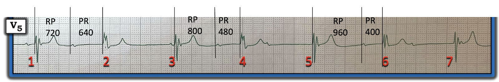
Và, khoảng RP dài nhất ( = 960 ms) dẫn đến khoảng PR ngắn nhất ( = 400 ms).
================================
ĐIỂM THEN CHỐT (PEARL) #7: = "Dấu chân" của Wenckebach:
Nhận xét sắc sảo của David Richley về ca hôm nay gợi lại một khái niệm MẤU CHỐT được gọi là "Dấu chân" của Wenckebach — mà tôi đã bàn luận trong nhiều bài ECG Blog trước đây (Bạn sẽ tìm thấy nhiều bản ghi Wenckebach như vậy kèm giản đồ bậc thang minh họa trong bài của tôi, ECG Blog #188).
- Ngoài nhịp theo nhóm (group beating) (mà nhiều độc giả đã quen thuộc) — còn có một số đặc điểm khác gợi ý một tính chu kỳ phù hợp với một dạng dẫn truyền Wenckebach nào đó. Marriott đã đặt cho những đặc điểm này cái tên đầy hình ảnh là "Dấu chân" của Wenckebach.
- XIN NHẤN MẠNH: Dẫn truyền Wenckebach không phải lúc nào cũng biểu hiện đủ từng dấu hiệu này. Dù vậy — việc nhận ra có nhiều đặc điểm trong số này góp phần rất lớn vào việc gợi ý chẩn đoán! (và đây là lý do tôi nghi ngờ chỉ trong vài giây — rằng có một dạng dẫn truyền Wenckebach nào đó trong ca hôm nay).
Đây là những "Dấu chân" cần tìm:
- Nhịp theo nhóm.
- Khoảng PR dài dần cho đến khi một nhát bị rớt — sau đó chu kỳ bắt đầu lại và khoảng PR ngắn lại.
- Nhịp nhĩ đều (tức là khoảng P-P đều, hoặc ít nhất là khá đều).
- Khoảng ngưng chứa nhát bị rớt ngắn hơn hai lần khoảng R-R ngắn nhất.
- Khoảng R-R ngắn dần trong mỗi nhóm nhát, cho đến khi một nhát bị rớt.
- Tương quan nghịch RP/PR (như David Richley đã giải thích ở trên).
Ca hôm nay cực kỳ khó — vì không có khoảng PR nào của các nhát được dẫn truyền giống nhau. Tuy nhiên có nhịp theo nhóm — nhịp nhĩ khá đều — và (theo Hình-11) — tương quan nghịch RP/PR!
- Như thường lệ — Xin cảm ơn David Richley đã nhắc tôi về tầm quan trọng của tương quan nghịch RP/PR mà BS. Barney Marriott đã dạy tôi từ nhiều thập kỷ trước!
================================
Các LINK bổ sung đáng quan tâm:
- ECG Blog #164 — "Dấu chân" của Wenckebach.
- ECG Blog #236 — có một ECG Video Pearl dài 15 phút về các blốc AV độ 2 (Tôi bắt đầu nói về "Dấu chân" ở khoảng ~1:20 trong video này).
- ECG Blog #235 — trong PHẦN BỔ SUNG của Blog #235 này (ở cuối trang) — David Richley bổ sung thêm các Pearl về chẩn đoán blốc AV tiến triển.
- ECG Blog #188 — trong đó tôi cung cấp LINK tới hơn 115 giản đồ bậc thang (nhiều giản đồ trình bày phân tích từng bước) — trong số đó có nhiều ví dụ về dẫn truyền Wenckebach.
- LƯU Ý: Tôi đã thêm một LINK để dễ tìm trang Giản đồ bậc thang này (Xem thanh TRÊN CÙNG của MENU ngay dưới tên Blog của tôi ở đầu mỗi trang trong Blog của tôi! ).